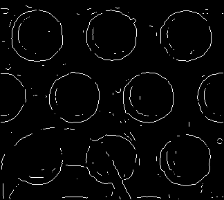
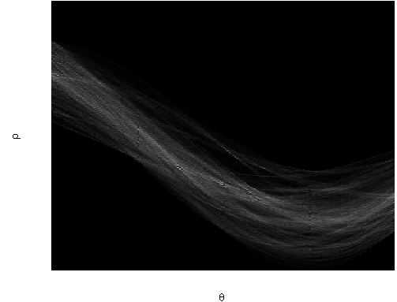
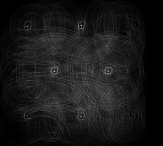

test.m: The main file of the project.
Input : The parameter settings and the input image.
Output : Displays and saves the outputs at each stage.
Details : The steps involved are: 1) preprocessing using non-linear filter; 2) generating edge map; 3) hysteresis thresholding; 4) hough line detection;
and 5) hough circle detection.
zeroCross.m Zero-crossing algorithm.
Input : The gradient image and threshold.
Output : Binary image showing the contour of the edges.
Details : The contours are decided by looking at a neighborhood(4 directions) around each pixel and contour is formed depending on the change
of gradient magnitude.
myHoughLines.m Hough Transform for line detection
Input : Binary edge image, rho resolution, theta, threshold and number of peaks.
Output : Hough image and points on each line segment.
Details : We use the normal Hough transform to build the accumulator. Next, we find the peaks among all the bins of the Hough transform matrix. This
gives us the lines in the image. To build the line segments from the lines, we find gaps among the points on each line. Thresholding this gap gives us the
line segments. This idea is taken from MATLAB implementation of houghlines .
myHoughCircle.m Hough Transform for circle detection.
Input : Binary edge image, radius for circle detection, threshold, region of interest(optional)
Output : Hough image and points on the circles.
Details : We find points on the edge image and thereafter fit a circle of given radius to these points.
The points which fall on a circle of given radius increase the accumulator. First, we get the limits of the circle (left and right). Next, we traverse along this
circle, with given radius, and accumulate edge points which lie on this circle. Then, we find the maximum peaks in the accumulator space and return (X,Y) coordinates from these peaks.
Traversing the circles in hough transform is adapted from here .
For drawing the circles on the original image, we sample points from the above set at different angles and the given radius. This idea is taken from
here.
hysthresh.m Hysteresis thresholding of an edge image
Input : Binary image, lower and upper threshold
Output : Thresholded binary edge image
Details : Edge points above the upper threshold are included in the edge map. For edge points falling below the lower threshold, we do connected
component analysis to join them to stronger edge points. Here, I have used the MATLAB in-built function bwselect.m . However, this could also have been done
using flood-fill and connected components.
Filters
Here, I have tried 3 different types of non-linear filters. bilateral filtering , median filtering and
anisotropic diffusion . For majority of the experiments,
bilateral and anisotropic worked well.
To run the project, type :
>> test
% Change the image filename in line 1 to test with different images.
RESULTS
PREPROCESSING AND EDGE DETECTION
1) Results on synthetic images. I built a white box in black background. In
the figures below, I show the original image, filtered image using non-linear
filters and Laplacian of Gaussian and Canny edge maps.
original Image
filtered Image using Bilateral filtering
edge Map (LOG)
edge Map (CANNY)
2) Results on coins.png.
original Image
filtered Image using Bilateral filtering
edge Map (LOG)
edge Map (CANNY)
3) Results on real images 1. Here I use the Hysteresis thresholding with Canny edge detector. Hysteresis thresholding improves over the normal gradient based
thresholding.
original Image
filtered Image using Bilateral filtering
edge(CANNY without Hysteresis)
edge(CANNY with Hysteresis)
3) Results on real images 2
original Image
filtered Image using Bilateral filtering

edge(LOG)
edge(CANNY with Hysteresis)
LINE DETECTION
1) Results on synthetic images.
original Image
edge(LOG)
Circles overlayed on original image
Hough Transform
2) Results on real images.
original Image
edge(LOG)
Circles overlayed on original image

Hough Transform
CIRCLE DETECTION
1) Results on real images 1
original Image
edge(LOG)
Circles overlayed on original image
Hough Transform
2) Results on real images 2. Some of the circles are not detected due to threshold value. If I increase the threshold values, number of false positives increases.
original Image
edge(LOG)
Circles overlayed on original image

Hough Transform
SUMMARY
Anisotropic diffusion was also tried and gave similar results to bilateral filtering.
The Hough lines worked well on synthetic data as well as on real images, as seen in the
experiments. Hough circle detection was not quite as good and failed to detect ALL of the circles.
This might be an issue of parameter tuning.